|
Xin Li, Ph.D. Senoir Scientist, AIQ
E-mail: xinli_uestc@hotmail.com |


Biography
He received the PhD degree in computer applied technology from University of Electronic Science and Technology of China (UESTC), Chengdu, China, in 2018. I worked as a research scholar in the department of computer science, University of North Carolina and also in the department of Radiology and BRIC, University of North Carolina at chapel hill from 2018 to 2019. I was a research associate in IIAI. Now, He is a senior data scientist with AIQ (ADNOC-G42 joint venture). His research interests are in computer vision with the focus on dense correspondence, object detection/segmentation, and medical image analysis.
Research Interests
Image Segmentation
3D Vision
Medical Image Analysis
Machine learning
Eudcation
PhD. student (September 2012--June 2018)
School of Computer Science and Engineering,
University of Electronic Science and Technology of China, Chengdu, China.
Advisor: Professor Hong Cheng & Professor Leiting Chen.M.S. student (September 2010--June 2012)
School of Computer Science and Engineering,
University of Electronic Science and Technology of China, Chengdu, China.
Advisor: Professor Leiting Chen.B.S. student (September 2006--June 2010)
School of Computer Science,
University of Electronic Science and Technology of China, Chengdu, China.
Major: Computer Science.
Research Experience
Senior Scientist (March 2020--Now)
AIO, Abu Dhabi, UAE.
Research Associate (March 2019--March 2020)
Inception Institute of Artificial Intelligence, Abu Dhabi, UAE.Post Doctoral (August 2018--March 2019)
IDEA Research Lab in the Department of Radiology, University of North Carolina at Chapel Hill, NC, USA.
Selected Publication
An asterisk (*) beside authors' names indicates equal contribution.
| 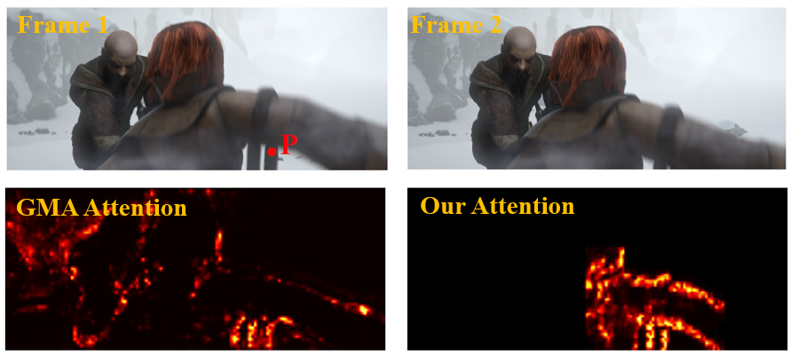 |
Learning Optical Flow with Kernel Patch Attention |
| 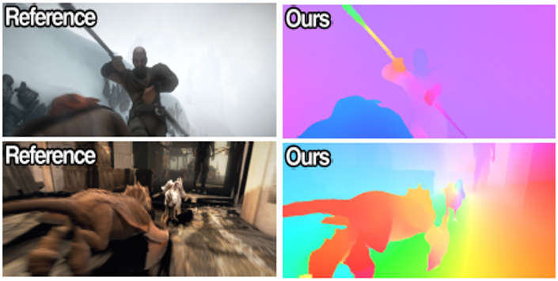 |
Learning Optical Flow with Adaptive Graph Reasoning |
| 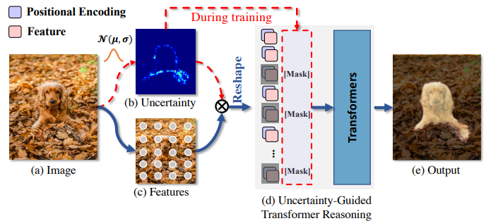 |
Uncertainty-Guided Transformer Reasoning for Camouflaged Object Detection |
| 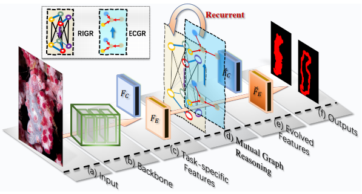 |
Mutual Graph Learning for Camouflaged Object Detection |
| 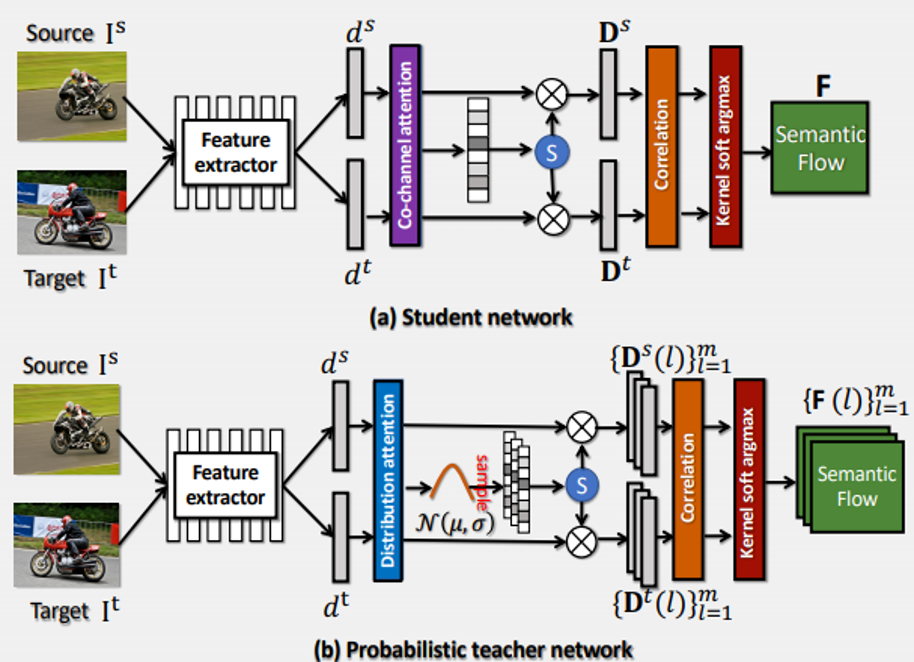 |
Probabilistic Model Distillation for Semantic Correspondence |
| 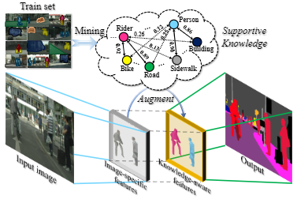 |
Robust Scene Parsing by Mining Supportive Knowledge from Dataset |
| 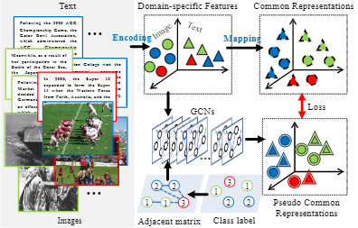 |
Exploring Graph-Structured Semantics for Cross-Modal Retrieval |
| 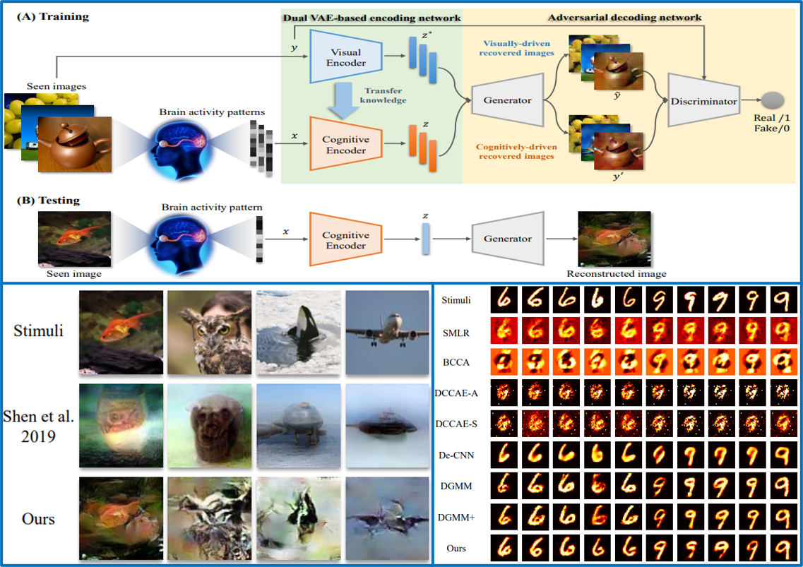 |
Reconstructing perceived images from brain activity by visually-guided cognitive representation and adversarial learning |
| 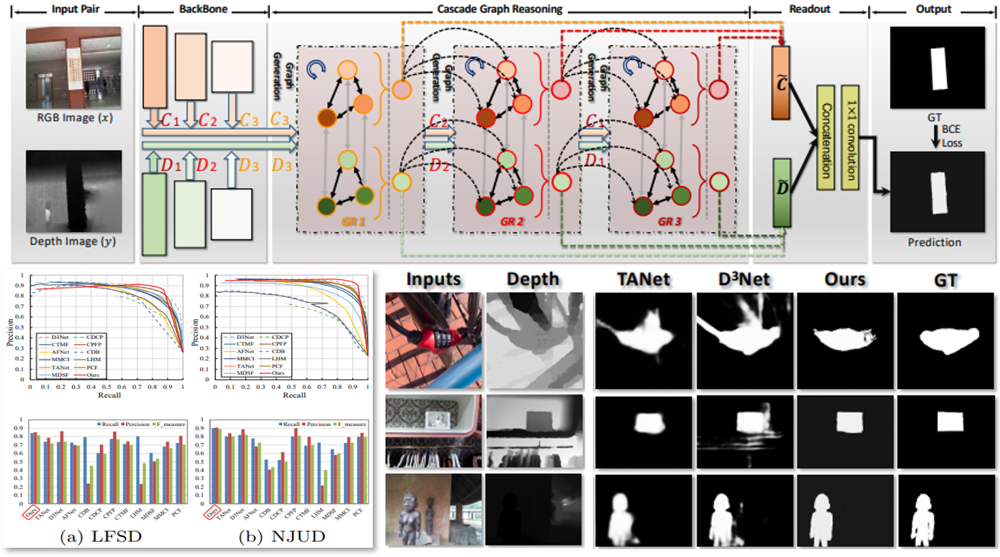 |
Cascade graph neural networks for rgb-d salient object detection |
 |
Hybrid Graph Neural Networks for Crowd Counting |
| 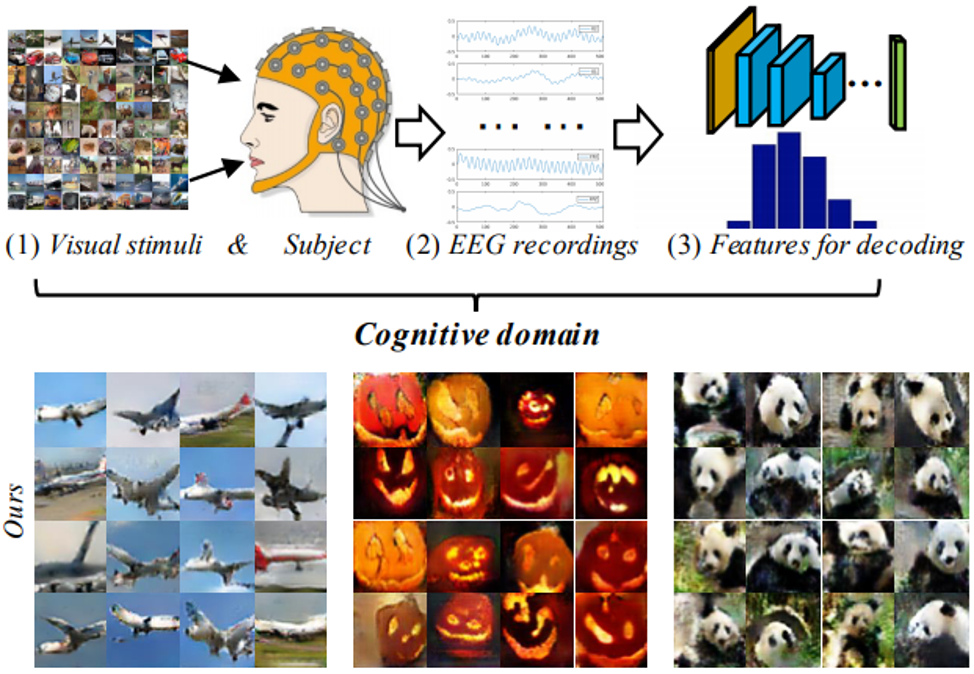 |
Decoding EEG by Visual-guided Deep Neural Networks |
| 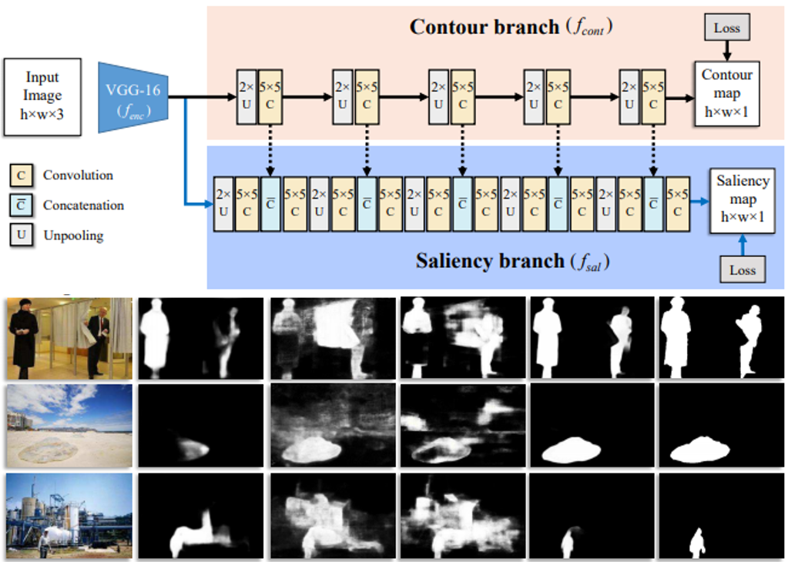 |
Contour Knowledge Transfer for Salient Object Detection |
| 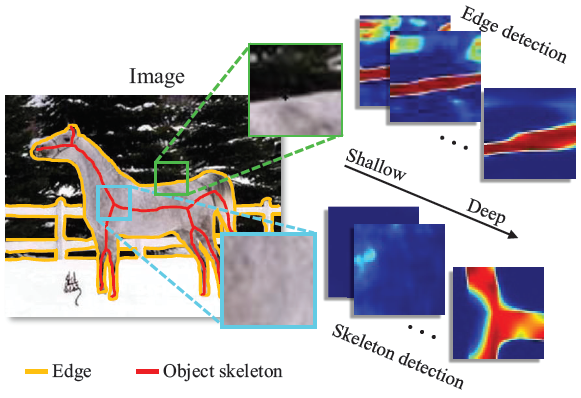 |
Multi-Scale Bidirectional FCN for Object Skeleton Extraction |
| 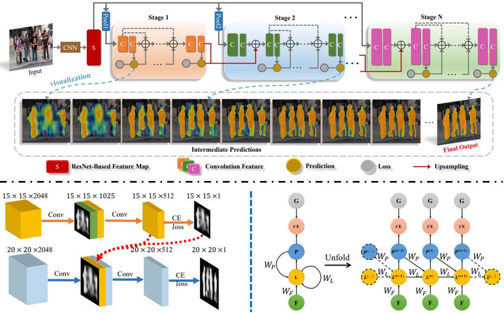 |
Multi-Scale Cascade Network for Salient Object Detection |
| 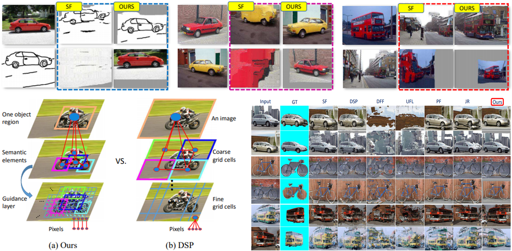 |
Object-aware Dense Semantic Correspondence |
| 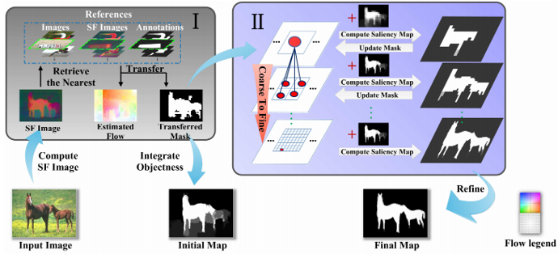 |
Saliency Transfer: An Example-Based Method for Salient Object Detection |